使い方¶
どのコマンドを使うか¶

コマンド一覧¶
コマンド |
内容 |
|---|---|
|
|
|
Sphinx でビルドする。既定は警告をエラー扱い。公開はしない |
|
外部リンクの切れを確認する |
|
docstring が無い公開 API を一覧する |
|
|
|
Mermaid ブロックが、標準の |
|
標準の |
|
ソースを構文解析して、モジュールの依存の地図を作る |
|
手元で使える機能を確認する。トークンの値は出さない |
|
Confluence への接続・認証・権限を確認する。ページは変更しない |
|
Confluence 形式でビルドする。公開は |
各コマンドの詳細¶
init
TARGET/docsにconf.pyと雛形、.github/workflows/docs.ymlを作る。--package(Python のソース)・--cpp(C++ のソース)・--houで構成を選ぶ。既存のファイルは
--forceを付けない限り上書きしない。CI の docstring の関門は、
--min-coverage(既定 80) 未満で 失敗する。--package/--cppに 実在しない場所 を指定すると、何も書かずに終了コード 2 で止まる (docs/からの相対パス)。
build
既定は警告をエラー扱い (
-W --keep-going)。--no-strictで外せる。-b confluenceでも 公開はしない (常にlocal)。公開できるのはpublishだけ。--require-mermaidでは、保存済みの環境 (増分ビルドのキャッシュ) を使わず、全部を読み直す (-E)。 前のビルドが「コードのまま」で済ませたページを、変更なしとして飛ばされると、方針が素通りするため。
coverage
--fail-underで基準を決められる。存在しないパス・構文エラーのファイルは、終了コード 2 のエラーにする (「100%」と黙って報告しない)。
__all__は= [...]・: list[str] = [...]・+= [...]を読む。_で始まる名前のモジュール (_compat.py・_impl/) は、公開 API ではないので数えない。
check-diagrams
DOCSが無ければ終了コード 2。_build・_generated・_doxygen・node_modules・隠しディレクトリは探さない。
check-mermaid
既定の検査対象は
docsとREADME.md。全ての Mermaid ブロックの 1 行目が、標準の%%{init}%%の行かを確かめる。GitHub (Markdown のまま) と、Sphinx (
mmdcで SVG にした HTML) で、図の色とフォントを揃えるため。
map
ローカルで読むだけで、外部へは送信しない。
--fail-on-cycleで、循環があれば失敗させる。 使い方は 機械の地図。
publish
Confluence への公開 を参照。
dryrun/publishでは、Mermaid が画像にならなければ 失敗させる (DOCSPIPELINE_MERMAID_MISSING=errorを自動で付け、全部を読み直す)。黙ってコードのままにすると、 Confluence のページが、図の無いページに置き換わるため。
環境変数¶
名前 |
内容 |
|---|---|
|
|
|
|
|
|
|
|
|
|
Confluence の環境変数は、Confluence への公開 にある。
Mermaid の図を書く¶
Markdown のコードフェンスに mermaid と書く。各ブロックの 1 行目に、標準の %%{init}%% の行を置く
(GitHub がこの行から色とフォントを読む)。手で書かずに、docspipeline check-mermaid --fix で入れられる。
flowchart LR
A["入力"]:::input --> B["処理"]:::proc ==> C["出力"]:::out
classDef input fill:#dae8fc,stroke:#1a73e8,color:#101828
色の約束: 青 = 入力、緑 = 処理、オレンジ = 出力・公開、赤 = 止まる・失敗、白 = 補助。
docspipeline mermaid-styleがclassDefの組を表示する。強調する経路は
==>(太い矢印) とlinkStyle <番号> stroke:#e8710a,stroke-width:4px。番号は、矢印を書いた順 (0 から)。順序のある流れは
sequenceDiagramにautonumberを付けると、番号つきの丸になる。
プロンプトのコピー¶
手順の説明に、そのまま Claude Code に渡せるプロンプトを載せられる。HTML では「プロンプトをコピー」ボタンが付く。
.. prompt:: 新しいリポジトリに docs/ を作る
このリポジトリに DocsPipeline で docs/ を作ってください。
docspipeline init と docspipeline build を実行し、警告が出たら原因を直してください。
Markdown (MyST) では、コードフェンスの言語名の代わりに {prompt} と題名を書く。
```{prompt} 新しいリポジトリに docs/ を作る
このリポジトリに ...
```
題名は省略できる (既定: 「Claude Code に渡すプロンプト」)。
Confluence など HTML 以外では、題名と普通のコードブロックになる。
秘密情報を書かない。
TOKEN=値のような形があれば、値を伏せた警告を出す。環境変数は、名前だけを書く。書き方の指針: 何をしてほしいか → 手順 → してはいけないこと (コミットしない、値を書き写さない、など) の順に書く。
設定の追加¶
docspipeline.config.build_config() が返した値は、conf.py の中で上書き・追記できる。
config = build_config(confdir=__file__, project="X", author="me")
# 型変数など、解決できない参照を警告から外す
config["nitpick_ignore_regex"] += [(r"py:class", r"mypkg\.T")]
globals().update(config)
使うときの注意¶
TypeVarを使った型注釈は、nitpicky で未解決の参照になる。上のように外すか、型注釈を単純にする。autodoc はコードを
importする。副作用のあるimportは、文書のビルドでも実行される。docspipeline coverageはimportせずに構文だけを読む。